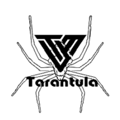
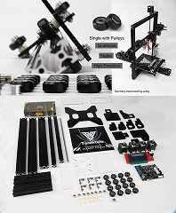
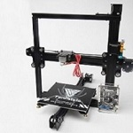

|  |  |  |
The Tevo Tarantula has multiple options for bed size as well as interchagable extruder. The Tevo Tarantula design is based on the Prusa i3. The design for this printer is all OpenSource and a part of the RepRap project.
Specifications
| Specs | Value |
|---|---|
| Nozzle Diameter | 0.3/0.35/0.4mm |
| Filament Diameter | 0.175mm |
| Hot Bed Temperature | 210°C (the maximum can be set to 260°C) |
| System | Windows, Linux, Mac |
| Power Supply | 220V |
| Print Speed | 70-100mm/s |
| Layer Thickness | 0.1-0.4mm |
| Color Print Speed | 150mm/s |
| SD-Card Support | yes |
| Max. Resolution | 0.1mm |
| Printing Software | Cura |
| Z Axis Positioning Accuracy | 0.004mm |
| XY Axis Positioning Accuracy | 0.012mm |
| Language | English |
Build guide
Tevo Tarantula: Axis Mount
Tevo Tarantula: Hot End
Tevo Trantula: Z Axis Left Side
Tevo Tarantula: Z Axis Right Side
Tevo Tarantula: The Bed
Tevo Tarantula: The Frame
Tevo Tarantula: Front Y Pulley
Tevo Tarantula: Y Motor Mount
Tevo Tarantula: Mounting X/Z Axis Rail
Tevo Tarantula: Top Rail, Squaring it up
Tevo Tarantula: Z Rod and Motor
Tevo Tarantula: X Axis Belt
Tevo Tarantula: Y Axis Belt, Bed Mount
Tevo Tarantula: Extruder
Tevo Tarantula: Wiring the Power Supply
Tevo Tarantula: PCB Mount
Tevo Tarantula: Wiring Part 1
Tevo Tarantula: Wiring Part 2
Tevo Tarantula: End Stops
Tevo Tarantula: LCD Aseembly
Tevo Tarantula: Manual Bed Level
Tevo Tarantula: Loading Filament
Tevo Tarantula: First Print